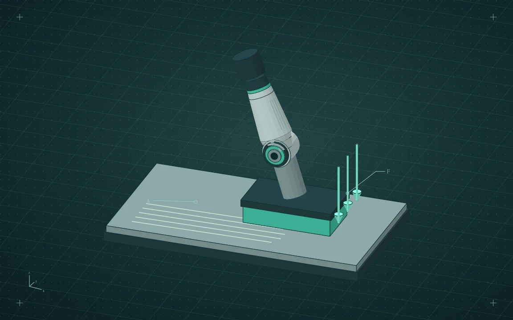

从自动化开始Starting with automation
我来到上海交通大学读自动化。之后做过的机器人项目，把课堂里的运动学、控制和感知联系到了一起。I came to Shanghai Jiao Tong University to study automation. Working on robots later brought kinematics, control, and sensing together for me.
我在上海交通大学读自动化，喜欢亲手搭机器人。I study automation at Shanghai Jiao Tong University and like building robots with my own hands.
最早是在仿真里学着看机器人怎么动。后来做外骨骼、戴上数据手套，开始关心另一件事：机器人碰到东西的时候，手上究竟能感觉到什么？I first learned about robot motion in simulation. Working with exoskeletons and data gloves led me to a different question: what can you feel through a robot when it touches something?
最近我在做视触觉采集，用机械臂按压传感器，把每一帧触觉图像和接触力对起来。Lately I’ve been working on tactile data collection, pressing a sensor with a robot arm and matching each image to the force that produced it.
我来到上海交通大学读自动化。之后做过的机器人项目，把课堂里的运动学、控制和感知联系到了一起。I came to Shanghai Jiao Tong University to study automation. Working on robots later brought kinematics, control, and sensing together for me.
在 MVIG，我开始学 MuJoCo，也试着用 3D Gaussian Splatting 重建场景。那是我第一次接触科研。At MVIG I began learning MuJoCo and exploring how 3D Gaussian Splatting reconstructs a scene. It was my first experience of research.
在唐鼎老师的课题组，我开始做力反馈外骨骼，也采集人手示教数据。同一个擦拭动作，除了工具走过的轨迹，还得记录它沿途用了多大的力。In Ding Tang’s group I began working on a force-feedback exoskeleton and recording human demonstrations. For a wiping task, the tool’s path tells only part of the story. We also needed to measure how hard it pressed.
在灵巧智能，我把手套动作映射到灵巧手上。在千觉机器人和交大 MPI Lab，我开始让机械臂重复按压、旋转和剪切，把触觉图像与力信号一一对应。At DexRobot I mapped glove motion to a dexterous hand. At Xense Robotics and SJTU’s MPI Lab, I started using a robot arm to repeat presses, twists, and shears, pairing tactile images with the resulting forces.
 原理示意Schematic
原理示意Schematic我和小组搭起一套外骨骼与 Flexiv 机械臂的双边遥操作系统。主端带动从端，接触产生的力和力矩再回到主端。My team and I built a bilateral system with a haptic exoskeleton and a Flexiv arm. Motion travels to the robot, and the forces and torques at contact travel back.
项目记录Project notes ↗ 原理示意Schematic
原理示意Schematic从一次按压开始，我把接触位置、加载条件和图像记录下来，再用机器人参考力检查三轴力估计。Starting with a single press, I recorded the contact location, loading conditions, and sensor image, then checked three-axis force estimates against the robot’s reference signal.
项目记录Project notes ↗
原理示意Schematic在 ForceTrace-CAFE 项目里，我负责采集示教、部署策略和真机实验。要看懂一次执行，还得把相机、位姿和六维力信号在时间上对齐。For ForceTrace-CAFE, I collected demonstrations, deployed policies, and ran hardware experiments. To inspect a single rollout, I had to align the camera, pose, and six-axis force signals in time.
项目记录Project notes ↗也做过Also explored 手套遥操作glove teleoperation / Isaac Lab 触觉仿真tactile simulation in Isaac Lab / KineTeach
ICIRA 2026 · 已录用 · 第四作者Accepted · Fourth author
Robotics and Computer-Integrated Manufacturing · 已投稿 · 第四作者Submitted · Fourth author
IEEE Transactions on Industrial Electronics · 修回中 · 第六作者Under revision · Sixth author